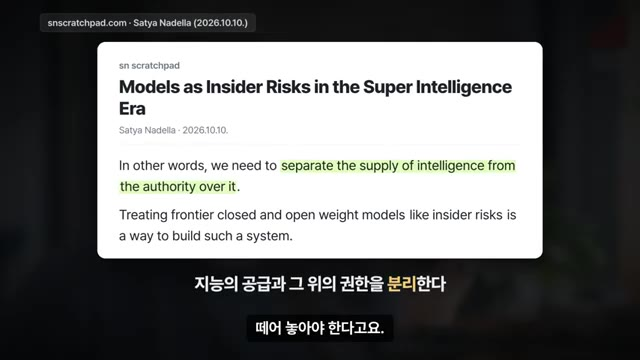

요즘 AI 기술 발전 속도가 정말 무섭다는 생각 많이 하시죠? 저도 솔직히 매일매일 새로운 소식이 쏟아져 나올 때마다 '이러다 내 일자리는 괜찮을까?', '나는 뭘 준비해야 하지?' 하는 불안감이 들 때가 많았어요. 특히 개발 분야는 더 빠르게 변화하고 있는 것 같고요.
그러던 중에 마이크로소프트 CEO 사티아 나델라의 인터뷰 영상을 보게 됐습니다. AI가 코드를 짜는 시대, 심지어 VS 코드 같은 IDE(통합 개발 환경)마저 밀려날 수 있다는 이야기까지 나오는데, 세계적인 IT 기업의 수장은 과연 이 변화를 어떻게 보고 있을지 너무 궁금하더라고요. 영상을 보면서 '아, 내가 막연하게 불안해하기만 할 게 아니었구나!' 하고 무릎을 탁 치게 되는 부분이 많았습니다.
1. AI가 코드를 짠다고? 익숙한 IDE마저 밀려나는 시대
영상을 보면서 가장 먼저 충격적이었던 건, 마이크로소프트의 CEO가 직접 "여섯 달 만에 IDE가 밀려났다"고 인정한 부분이었어요. 챗GPT보다 먼저 깃허브 코파일럿을 내놓으며 AI 시대 개발을 선도했던 MS인데, 클로드 코드 같은 새로운 모델이 등장하면서 개발 방식 자체가 근본적으로 흔들리고 있다는 거죠.
사티아 나델라의 말처럼, 이제는 사람이 코드를 입력하는 게 아니라 AI가 코드를 출력하고, 사람은 '스펙과 마크다운'을 입력하는 주체가 되는 시대가 온 것 같아요. 이 대목에서 '내가 사랑하는 것과 사랑에 빠지지 말라'는 말이 정말 크게 와닿았습니다. 기존에 익숙했던 개발 방식이나 도구에 얽매이지 않고, 모델의 능력에 맞춰 제품의 형태를 계속해서 바꿔나가야 한다는 거죠. 저도 모르게 고정관념에 갇혀 있었던 건 아닌가 반성하게 됐습니다.
“모델이 계단처럼 뛰면 제품의 형태도 곧바로 바뀌어야 한다. 만든 것과 사랑에 빠지지 말라.”
2. 코드는 싸지고, 진짜 '비싼' 건 따로 있다?
그렇다면 AI가 코드를 대신 짜주는 시대에 엔지니어는 뭘 해야 할까요? 사티아 나델라의 답은 명확했습니다. 바로 '검증'이요. 코드가 싸지면 싸질수록, 그 코드의 품질과 정확성을 확인하는 검증의 가치는 오히려 비싸진다는 거죠. 심지어 그는 "모델 가문을 따로 두고 다른 가문에게 비평을 맡기라"는 비유까지 들었는데, 한 모델의 약점이 제품의 약점이 되지 않도록 다각적인 검증이 필요하다는 뜻으로 이해했어요.
저는 이 부분이 정말 인사이트가 깊다고 느꼈습니다. 단순히 코드를 잘 짜는 것을 넘어, '어떤 코드를 짤 것인가' 하는 스펙과 의도를 명확히 하고, AI가 만들어낸 결과물을 정확하게 검증하고 개선하는 역할이 엔지니어의 핵심 역량이 될 거라는 거죠. 깃허브 코파일럿 코어 팀의 사례처럼, 에이전트가 대부분의 코드를 작성해도 결국 이를 경유하고 판단하는 건 엔지니어의 몫이라는 사실이 이를 뒷받침하는 것 같아요.
“코드가 싸진 세상에서 비싸진 건 검증이다. 스펙과 의도가 중요해졌다.”
3. 전문성이 값을 잃는다고? MS CEO의 꿈의 직업은 '배우는 사람'

많은 사람이 AI 때문에 자신의 전문성이 쓸모없어질까 봐 불안해하잖아요. 저도 그랬고요. 하지만 사티아 나델라는 "전문성이 값을 잃는 게 아니라 그 전문성을 새 지렛대로 쓰는 법을 익혀야 한다"고 강조했습니다. 즉, 기존의 전문성을 바탕으로 AI라는 새로운 도구를 활용해 더 큰 가치를 만들어내는 방법을 찾아야 한다는 거죠.
가장 인상 깊었던 건, 그가 "신입 엔지니어를 선배 프리셉터와 짝지어 주는 제도"인 '프리셉터십' 팀에 자신도 신입처럼 들어가 배우고 싶다고 말한 대목이었어요. 20만 명이 넘는 회사의 CEO가 스스로를 '배우는 사람'의 위치에 두는 모습에서 정말 큰 울림을 받았습니다. 그는 젊은 신입이든, 중견이든, 심지어 자신 같은 CEO든 "직접 경험하고, 배우는 데 시간을 투자하는 것이 가장 중요하다"며 "다시 학교로 돌아가자(Let's get back to school)"고 말합니다.
이 말이 제 머릿속을 맴돌았어요. AI가 모든 것을 바꿀 수 있는 세상에서, 내가 준비해야 할 가장 중요한 자세는 바로 '끊임없이 배우고 직접 해보는 것'이라는 걸 깨달았습니다. 변화를 두려워할 게 아니라, 적극적으로 뛰어들어 배우고 경험해야 한다는 거죠.
“전문성이 값을 잃는 게 아니라 그 전문성을 새 지렛대로 쓰는 법을 익혀야 한다.”
영상을 다 보고 나니, 막연했던 불안감이 어느 정도 해소되고 오히려 '내가 뭘 해야 할지'에 대한 명확한 방향을 얻은 기분이에요. AI가 아무리 발전해도 결국 그 기술을 활용하고, 검증하고, 새로운 가치를 만들어내는 건 사람의 몫이라는 것. 그리고 그 과정에서 가장 중요한 건 '배움의 자세'라는 점을 다시 한번 마음에 새깁니다.
사티아 나델라의 말처럼, 저도 이제 '다시 학교로 돌아간다'는 마음으로 새로운 기술과 변화를 적극적으로 받아들이고 직접 경험해보려고 해요. 기존에 익숙했던 방식만을 고수하지 않고, 끊임없이 배우고 성장하는 엔지니어, 그리고 사람으로 거듭나야겠다는 다짐을 해봅니다.